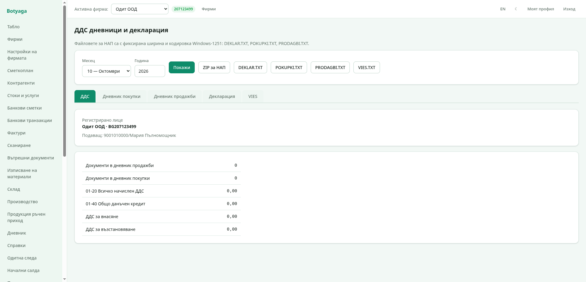

Начало · ДДС
ДДС
Дневници по чл. 116, VIES, справка-декларация и SAF-T.
ДДС операции
Операцията казва как документът се третира: колона в дневника, ставка, сметка на контрагента, ДДС сметка и протокол по чл. 117. Нова фирма получава готови операции (~29) с кода и допълнителния код (VIES 1/2/3, чл. 163а 20/21, марж 30, ОТУ 31/32, OSS 33).
Дневници и декларация
Покупки и Продажби се извеждат за месец с бройки и суми; справката-декларация има DEKLAR и VIES части. Изтегляте POKUPKI.TXT / PRODAGBI.TXT / VIES и печат PDF/Excel/ODS.
Валидация
Преди качване в НАП пуснете Валидирай: той посочва структурни грешки (например празни секции) и предупреждения.
